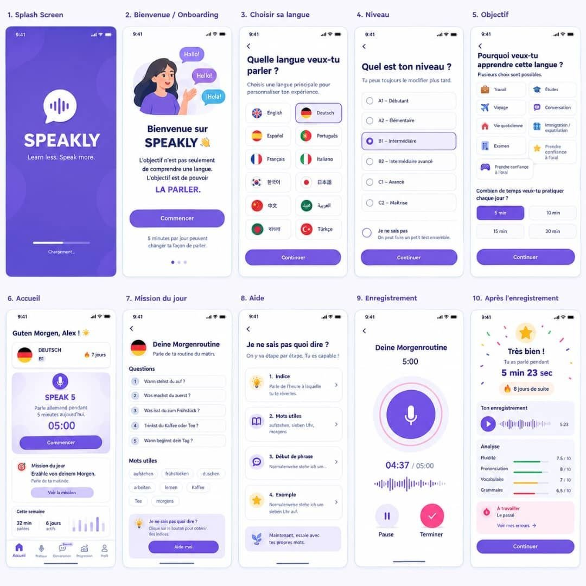

Maquette d'origine (10 écrans) qui a servi de spécification à l'application : écran de démarrage, onboarding, choix de la langue, niveau, objectif, accueil, mission du jour, aide, enregistrement et bilan. Chaque écran ci-dessous est implémenté dans l'app.

Logo à ondes, « SPEAKLY », « Learn less. Speak more. », barre de chargement violette.
splash.jsBulles multilingues, promesse « L'objectif est de pouvoir LA PARLER. », bouton Commencer.
onboarding.js12 langues en grille avec drapeaux ; la langue choisie passe en violet avec une coche.
onboarding.jsRadio A1 → C2, plus « Je ne sais pas » qui déclenche un test express.
onboarding.js8 objectifs à cocher (voyage, travail, examen…) et la durée quotidienne 5/10/15/30 min.
onboarding.js« Guten Morgen Alex », badge langue + série de jours, carte SPEAK 5 / 05:00,
mission du jour, barres « Cette semaine », onglets Accueil / Parler / Conversation / Progrès / Profil.
Routine, 5 questions numérotées cliquables, mots utiles audio, bloc « Je ne sais pas quoi dire ? » avec le bouton Aide-moi.
mission.js4 étapes : 1. Indice · 2. Mots utiles · 3. Début de phrase · 4. Exemple, puis « Maintenant, essaie avec tes propres mots ».
help.jsAnneau de progression, chrono 04:37 / 05:00, micro pulsé, vumètre,
transcription en direct, Pause et Terminer.
« Très bien ! », durée parlée, jours de suite, réécoute, Analyse sur 4 axes (fluidité, prononciation, vocabulaire, grammaire), « À travailler », Continuer.
results.jsSons difficiles par langue : IPA, astuce, écoute, note sur 100.
Dialogues guidés tour par tour, l'app parle et tu réponds.
Courbe de scores, heatmap 12 semaines, lexique, 12 badges.
Langue, niveau, objectifs, voix, interface FR/EN/ES, export JSON.